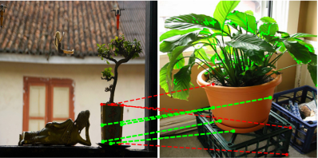
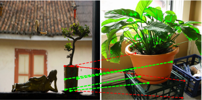
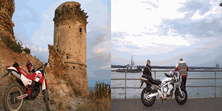
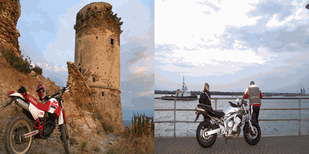

SD4Match: Learning to Prompt Stable Diffusion Model for Semantic Matching
CVPR 2024

Abstract
In this work, we address the challenge of matching semantically similar keypoints across image pairs. Existing research indicates that the intermediate output of the UNet within the Stable Diffusion (SD) framework can serve as robust image feature maps for such a matching task. We demonstrate that by employing a basic prompt tuning technique, the inherent potential of Stable Diffusion can be harnessed, resulting in a significant enhancement in accuracy over previous approaches. We further introduce a novel conditional prompting module that conditions the prompt on the local details of the input image pairs, leading to a further improvement in performance. We designate our approach as SD4Match, short for Stable Diffusion for Semantic Matching. Comprehensive evaluations of SD4Match on the PF-Pascal, PF-Willow, and SPair-71k datasets show that it sets new benchmarks in accuracy across all these datasets. Particularly, SD4Match outperforms the previous state-of-the-art by a margin of 12 percentage points on the challenging SPair-71k dataset.
General Pipeline
We directly optimize the prompt embedding of the Stable Diffusion model with keypoint supervision. We offer three prompt learning options: a single and universial prompt (Single); one prompt for each object category (Class) and a conditional prompting module (CPM).
(Scroll down for CPM architecture)
Conditional Prompting Module (CPM)
SPair-71K Benchmark Result

 

Dense Matching

 

BibTeX
@misc{li2023sd4match,
title={SD4Match: Learning to Prompt Stable Diffusion Model for Semantic Matching},
author={Xinghui Li and Jingyi Lu and Kai Han and Victor Prisacariu},
year={2023},
eprint={2310.17569},
archivePrefix={arXiv},
primaryClass={cs.CV}
}